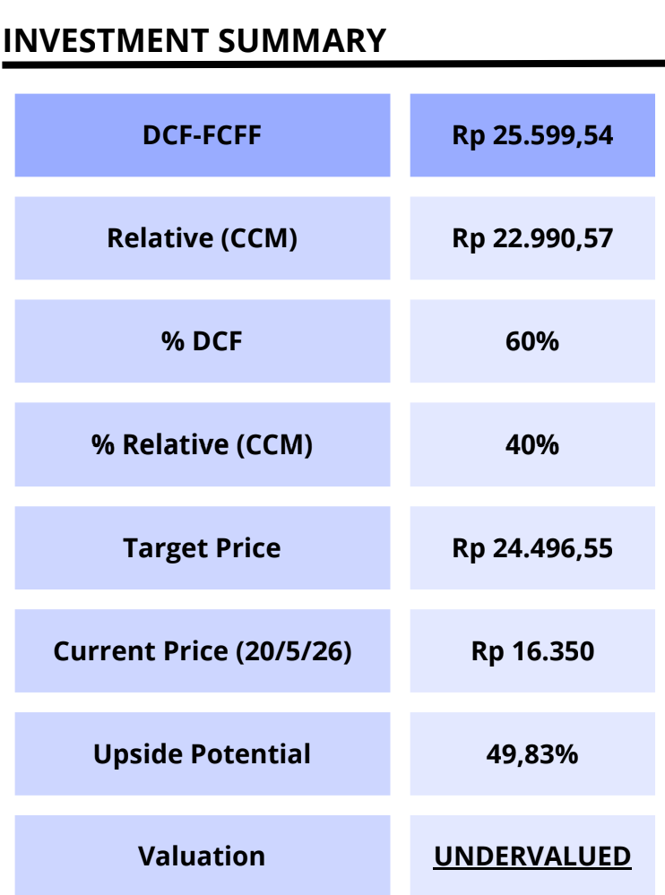
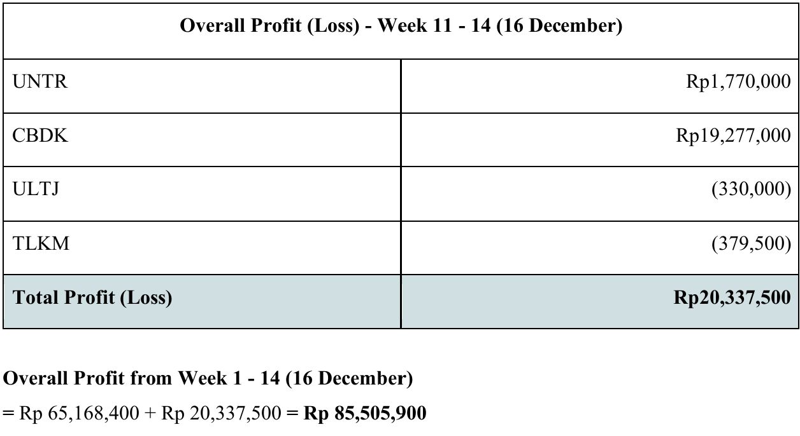
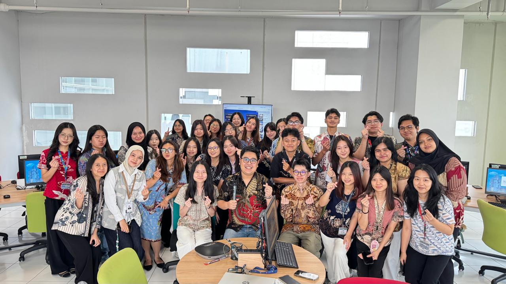
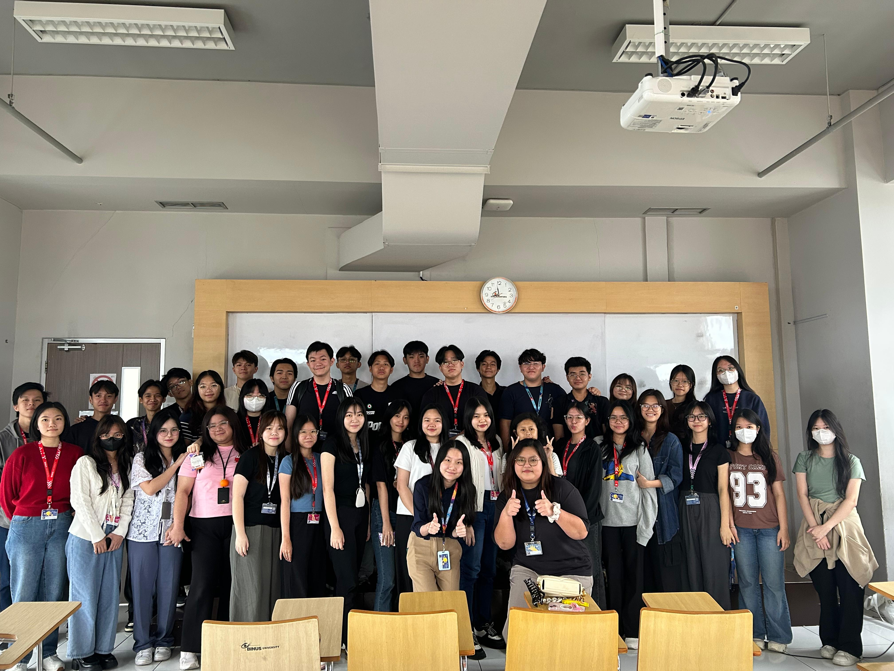
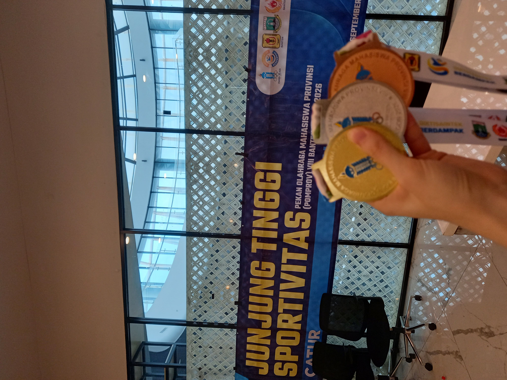
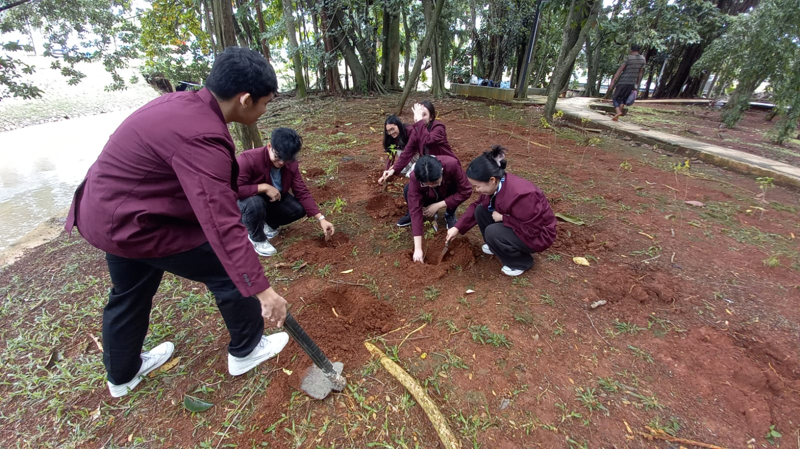
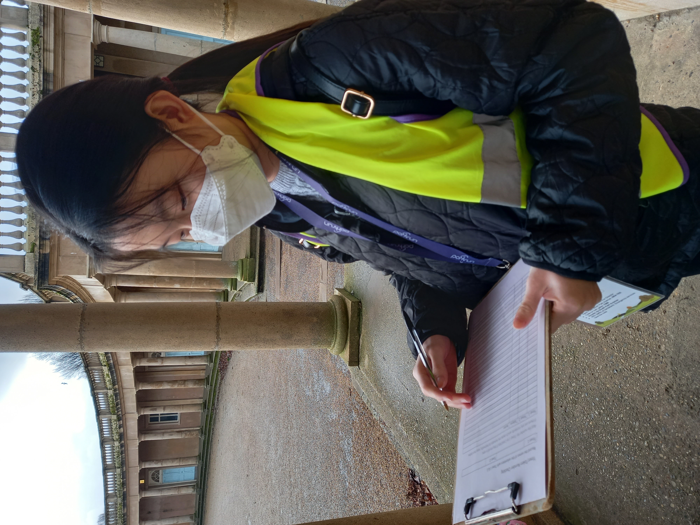

01
EQUITY VALUATION
GGRM Stock Valuation
Equity valuation of Gudang Garam Tbk using DCF-FCFF and relative valuation approaches, combining P/E and EV/EBITDA analysis.

Target PriceRp24,496.55
Implied Upside49.83%
FINANCE • VALUATION • INVESTMENT RESEARCH
Finance student at BINUS University with a strong academic foundation and practical project experience across financial analysis, equity valuation, investment research, and data analytics.
I am interested in how financial information, valuation, and data can support investment and business decisions.
My academic work covers financial modelling, equity valuation, statistical analysis, investment research, and financial risk.
I have practical experience with Excel, R/RStudio, PowerPoint, ACL, Authen, Microsoft Access, and analytical frameworks used in finance and auditing coursework.
Outside academics, I am a student-athlete representing BINUS in competitive chess.
Selected finance, valuation, investment, and analytics work.
EQUITY VALUATION
Equity valuation of Gudang Garam Tbk using DCF-FCFF and relative valuation approaches, combining P/E and EV/EBITDA analysis.

INVESTMENT MANAGEMENT
Portfolio management project applying investment analysis and portfolio decision-making, achieving an 85% return over a three-month period in the academic simulation.

MACHINE LEARNING • SOUTH KOREA
Machine-learning project focused on stock-price prediction using South Korean market data, with quantitative analysis and model evaluation in R/RStudio.
FINANCIAL RISK
Research project examining firm-level risk premiums and their implications for cost of equity and WACC in an emerging-market context.
BUSINESS & INDUSTRY ANALYSIS
Strategic and financial analysis of Chery and the Indonesian EV industry, incorporating policy, market conditions, competition, TKDN considerations, and financial factors.
BINA NUSANTARA UNIVERSITY • ALAM SUTERA
Facilitate peer-learning sessions across six courses, including accounting, taxation, accounting information systems, auditing, computerized audit, and ERP Financial Accounting and Controlling.


BINA NUSANTARA UNIVERSITY – FIRST YEAR PROGRAM • ALAM SUTERA
Supported freshmen through their academic and social transition through engagement and student-support activities.
BINUS CHESS CLUB • ALAM SUTERA
Supported club activities, exhibitions, and campus events while contributing to member engagement.
Finance student with strong academic performance.
Strong quantitative and economics foundation.
Consistent high academic ranking during secondary school.
70+ hour research project on symmetry and asymmetry in visual perception.
1st Mixed Lightning Team; 2nd Women's Individual; 3rd Women's Lightning.

Multi-day self-sufficient outdoor expedition and volunteering.
Community service activities spanning environmental initiatives and youth engagement.

ENVIRONMENTAL SERVICE
Participated in tree-planting and environmental activities supporting local conservation and community initiatives.
2024
COMMUNITY & YOUTH
Supported junior participants through event setup, supervision, timekeeping, and on-site assistance.
3+ monthsLET'S CONNECT
Open to connecting with finance professionals, recruiters, and fellow students.